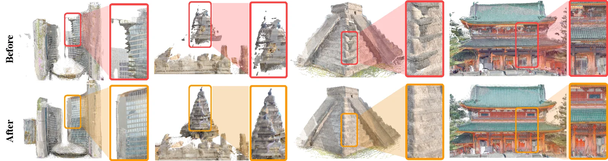

Abstract
Internet-scale photo collections of real-world landmarks have driven progress in 3D computer vision yet remain highly challenging for modern 3D foundation models (3DFMs) that estimate scene structure in a single feed-forward pass. In this work, we introduce ArchWorld, a benchmark of 3D architectural landmarks with high geographic coverage and rich metadata, and use it to conduct a thorough error analysis of current 3DFMs to understand where they fall short and how they can be improved. We find that scene extent is a confounding factor when comparing performance across regions, and we introduce an extent-normalized version of Chamfer Distance to resolve this issue. We examine socially relevant disparities in model error and find that model performance varies by geographic region, but that the trends do not closely match training data representation. Leveraging insights from model failings, we introduce an intervention scheme that improves 3DFM performance while simultaneously reducing geographic disparities.
The ArchWorld Benchmark
We present the first error analysis aimed at studying 3DFM behavior across the socially relevant dimensions of geographic regions and architecture types (e.g., mosques, churches). To do this, we construct ArchWorld, a dataset of 3D scenes with meaningful coverage of architectural landmarks from eight regions: Africa, East Asia, Europe, Latin America, North America, South Asia, Southeast Asia, and West/Central Asia.
Above, we show a sample scene from each region in ArchWorld. Each scene combines an internet photo collection, a dense 3D reconstruction, and scene metdata. The metric scale factor, which converts the reconstruction to meters and gives the scene extent and the distances shown, was annotated manually for each scene. Additionally, we manually annotated scene-specific 3D masks that were used to refine each point map down to just the landmark itself.
Where Do 3D Foundation Models Fall Short?
We benchmark VGGT, Depth Anything 3, and π3 on ArchWorld, measuring reconstruction error with Chamfer Distance in meters:
$$\mathrm{CD} = \frac{\mathrm{Accuracy} + \mathrm{Completeness}}{2} \times \mathrm{ScaleFactor}$$Because landmark size varies across regions, we also report normalized CD, which divides CD by the scene's metric extent:
$$\widehat{\mathrm{CD}} = \frac{\mathrm{CD}}{\mathrm{Extent}}$$The table below reports each model's median CD and \(\widehat{\mathrm{CD}}\) by geographic region, revealing clear regional disparities that persist even for π3, the best-performing model.
Regional disparities persist even within the same architecture type. Below, we show π3's median \(\widehat{\mathrm{CD}}\) for each region and type of religious building (churches, mosques, and temples), along with an example scene for each median.
π3 struggles to reconstruct minarets, as in the Muhammad Ali Mosque, while the dense urban surroundings of Mary, Queen of the World Cathedral introduce spurious geometry. These examples suggest that geographic disparities also reflect differences in architectural characteristics and scene complexity.
ArchAttend: Intervention via Semantic Cross-View Attention Maps
Semantic Cross-View Attention
We aggregate cross-view attention over semantic elements segmented with SAM 3 for both architectural \(\mathcal{E}_{\mathrm{arch}}\) (e.g., minarets, domes) and non-architectural elements \(\mathcal{E}_{\mathrm{non}}\) (e.g., sky, trees). In low-error scenes, we find that attention concentrates on the landmark; in high-error scenes, it leaks onto sky, water, and other distractors.
A Two-Pass Intervention
Results
Applied to DA3, ArchAttend lowers median \(\widehat{\mathrm{CD}}\) and narrows the gap between regions and architecture types.

static/images/fig_qualitative.webpBibTeX
ADD